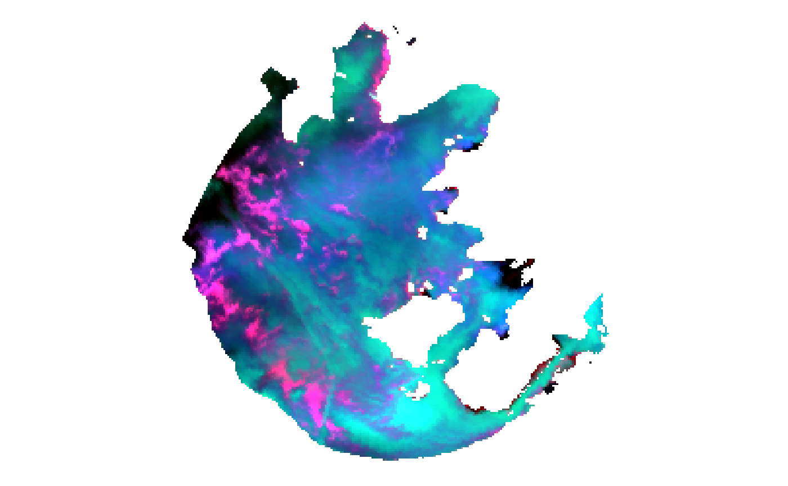
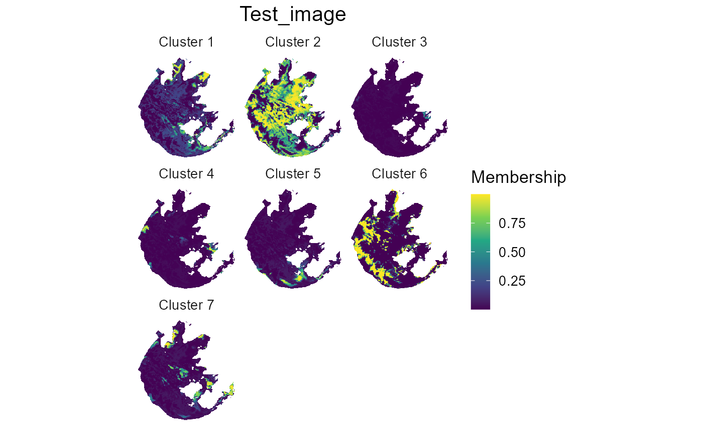
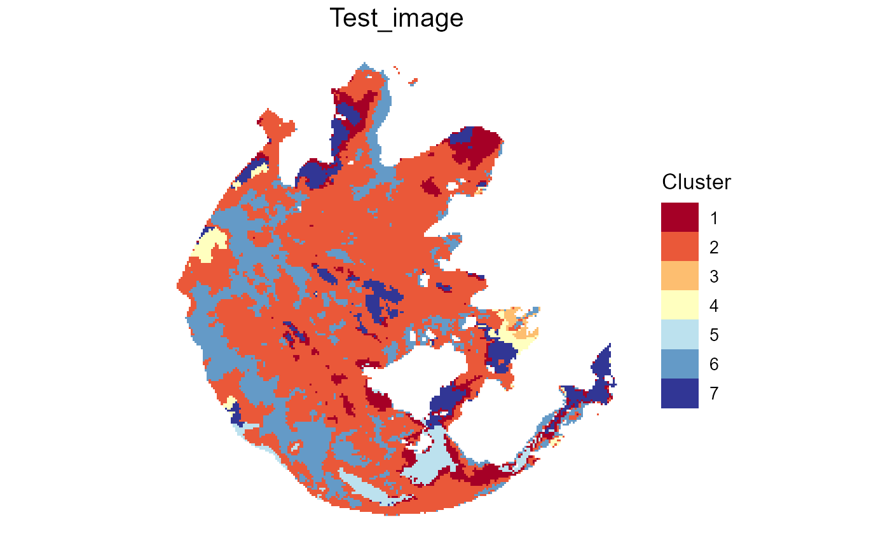
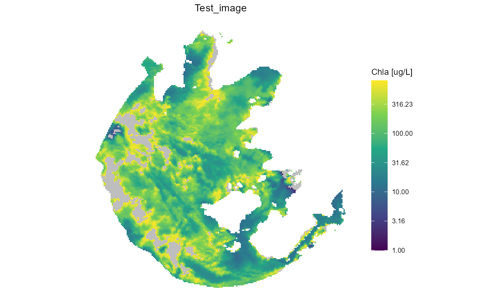

R/Image_application.R
apply_to_image.RdThis function could apply the defined water cluster to corrected image files.
Should run generate_param or generate_param_ex to generate a res list as an input
of function apply_to_image
apply_to_image( input, res, color_palette = RdYlBu(res$K), pos_rgb = NULL, output_image = FALSE, output_resultpng = FALSE, output_imRrs.n = FALSE, output_dir = ".", output_format = "GTiff", Chla_est = FALSE, title.name = NULL, png_scale = 50, fn_memb = "output_membership", fn_cluster = "output_cluster", fn_imRrs.n = "output_imRrs_normalized", fn_rgbpng = "output_rgb", fn_Chla = "output_Chla" )
| input | A raster or a character linking to the raster file on the disk. |
|---|---|
| res | A required list that used for clustering the image data including:
For the convenience, function generate_param supports to quickly
generate this |
| color_palette | The palette of cluster color. Default as |
| pos_rgb | The position of RGB channels, default as |
| output_image | Logical, whether to save images as raster files to your disk. Default as |
| output_resultpng | Logical, whether to save png files to your disk. Default as |
| output_imRrs.n | Logical, whether to produce normalized Rrs files. Default as |
| output_dir | The directory of output files. Default as the current working directory ( |
| output_format | A string, the format of raster file, default as |
| Chla_est | Logical, whether to estimate Chla concentration using the function FCM_m_Chla_estimation.
Default as |
| title.name | Character, the title name of ggplot for plotting. Default as |
| png_scale | Numeric, scale of png. Recommended as |
| fn_memb | A string, filename of membership raster file. Default as |
| fn_cluster | A string, filename of cluster raster file. Default as |
| fn_imRrs.n | A string, filename of normalized Rrs raster file. Default as |
| fn_rgbpng | A string, file name of rgb png. Default as |
| fn_Chla | A string, file name of estimated Chla raster file. Default as |
A list() of all results and several inputs:
input What we input character link to image file or raster object
res Condition input of apply_to_image
res.FCM List of FCM.new result
res.Chla Data.frame includes the template and final Chla estimation results
coord Dataframe of xy coordinates
imRrs.raw Dataframe of raw Rrs excluding NA pixels. Thus, it may have less pixels than
that of input
imRrs.n Dataframe of normalized Rrs. Same as imRrs.raw but in the normalized scale
im.cluster Dataframe of cluster with coordinates.
im.memb Dataframe of membership returned by apply_FCM_m. It includes coordinates.
raster.memb Raster object of membership value. NULL if output_image is FALSE.
raster.cluster Raster object of cluster. NULL if output_image is FALSE.
raster.Chla Raster object of Chla concentration. NULL if output_image is FALSE.
p.memb A ggplot list of membership value map
p.cluster A ggplot list of cluster map
p.rgb A ggplot list of rgb map
p.Chla A ggplot list of Chla map
2019-12-12:
The section FCM running used the subset of default Rrs clusters.
Please see the section Part II: New coming raster data by running vignette('Builtin_centrodis')
if have not known how to do in that situation.
Also, if it is your first time to get the image data into R, you could
load the raster data by typing raster::brick(filename) which filename
is the path of your data such as '/data/Test.dat' or 'E://data//Test.tiff' or so.
2020-06-27:
Note that the inputs of apply_to_image support the file path of raster file.
2020-07-03:
Reported by Xiaolan Cai, the required RGB bands for plotting the true color image are defined by inputted wavelength now.
Bi S, Li Y, Xu J, et al. Optical classification of inland waters based on an improved Fuzzy C-Means method[J]. Optics Express, 2019, 27(24): 34838-34856.
Other Fuzzy cluster functions:
FCM.new(),
FuzzifierDetermination(),
apply_FCM_m(),
cal_memb(),
generate_param(),
plot_spec_from_df()
# \donttest{ library(FCMm) data("OLCI_TH") data("Bi_clusters") res <- generate_param(c(413,443,490,510,560,620,665,674,709,754,865,885)) im_result <- apply_to_image(input=OLCI_TH, res=res, title.name="Test_image", Chla_est=TRUE)#>#>#>#> Warning: data length [593820] is not a sub-multiple or multiple of the number of rows [49494]#>#> Warning: Parameter stand has been deprecated. Please use do.stand!#>#>#>#>#>#>#>#>#>#># }